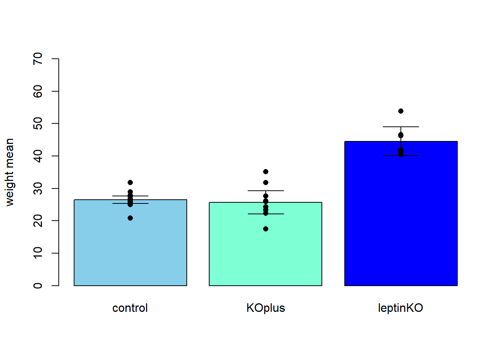
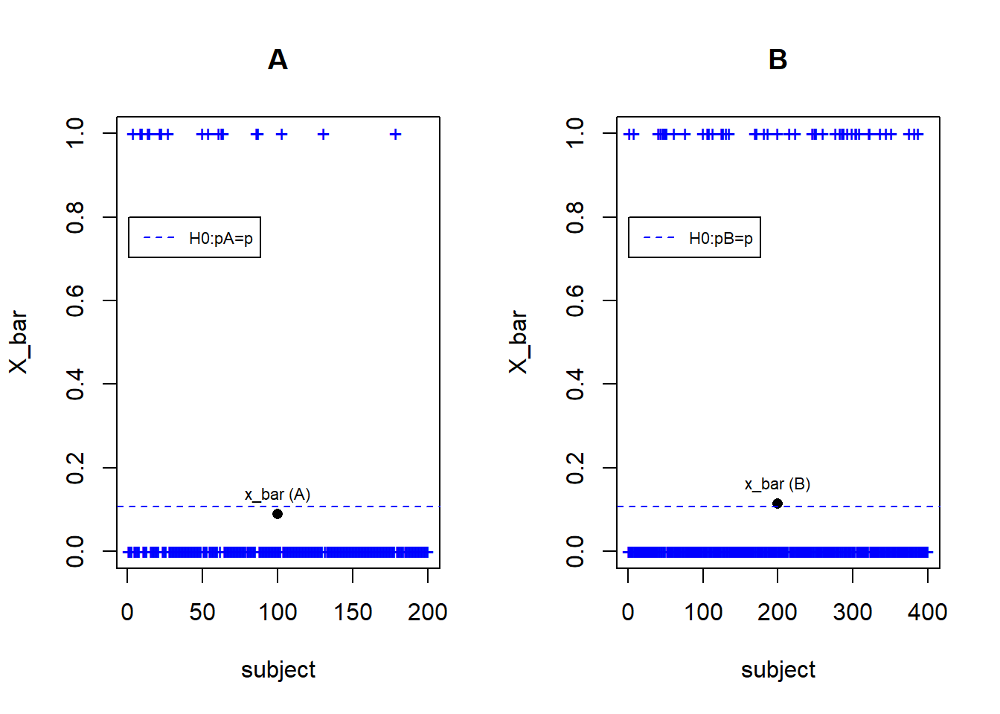
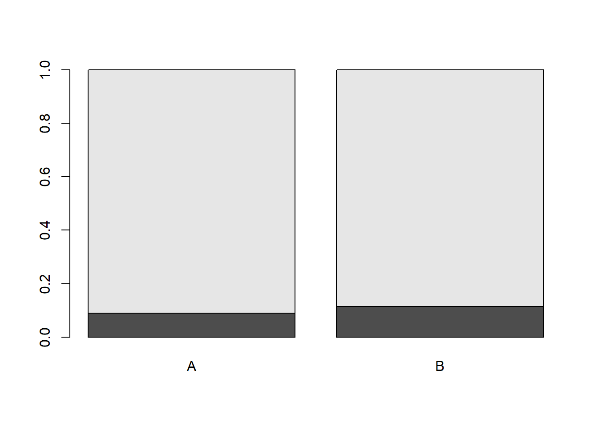
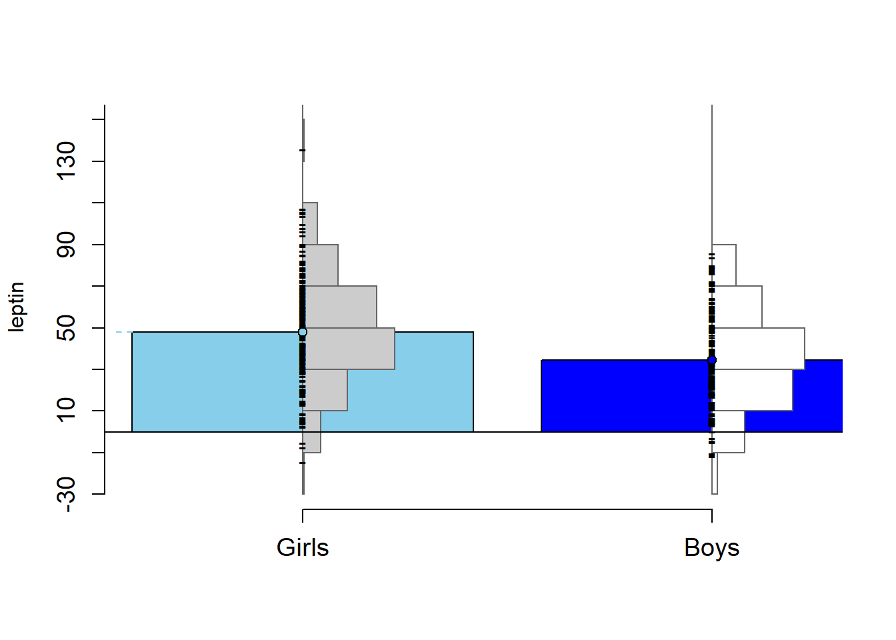
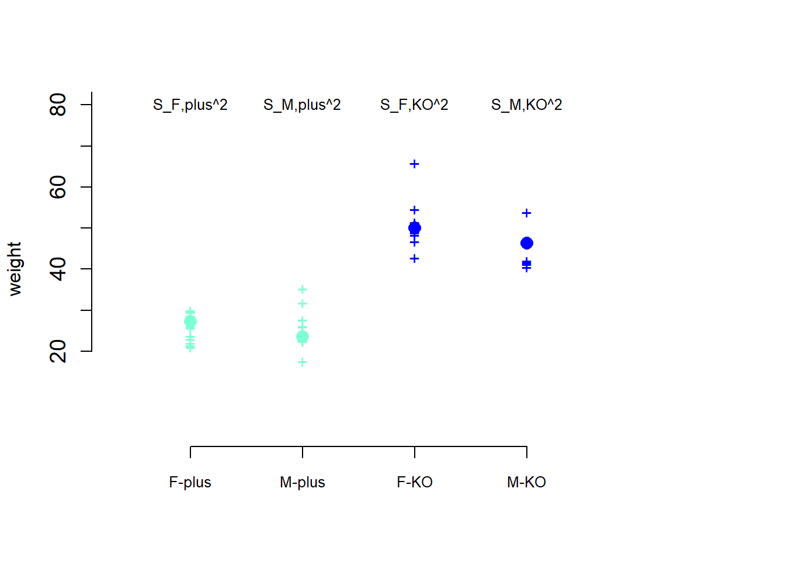
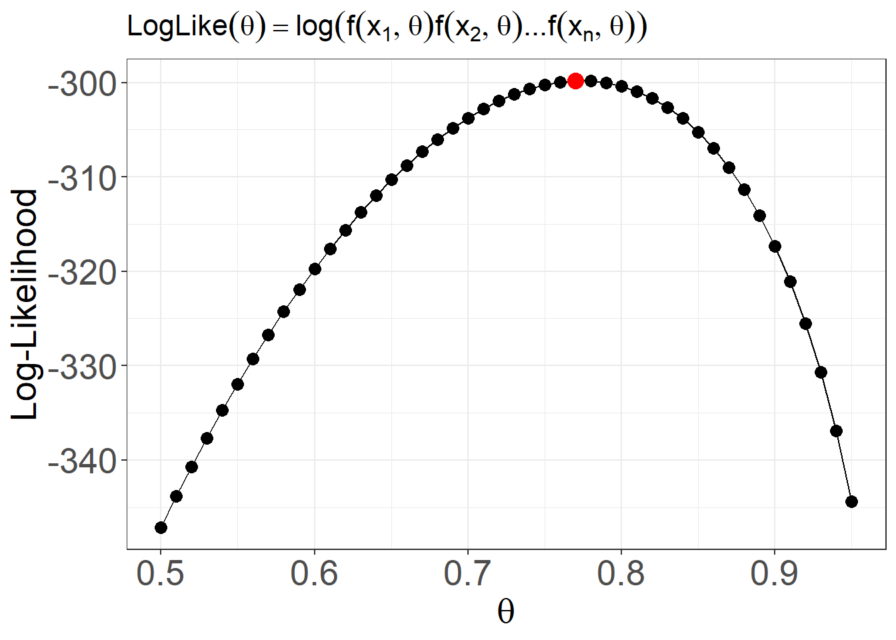

Chapter 17 Mean differences across several groups
17.1 Objective
In this chapter, we will generalize the test for difference between means among many groups. That is many levels of a categorical variables. We will do this by using the analysis of variance (ANOVA) that compares the variance within the groups and the variance between the groups.
We will see that ANOVA can be further used to describe the mean of a continuous variable across two different categorical variables with many levels each. This is called a 2-way ANOVA.
Finally we will use the ANOVA to test that at least one combination of the two categorical variables can not be explained by the independent contributions of each condition. This is called a 2-way ANOVA plus interaction.
17.2 Different means among several conditions
In a study that wanted to test the effect of leptin in neurodevelopment, 7 male mice had their leptin gene knocked out. Whereas, 16 mice were left with normal leptin function. In a third group, 10 mice with knocked out leptin were injected leptin protein (PMID:30694175). An initial question was to test the effect of the leptin group on the body weight of the animals. We therefore assume three experimental conditions and that
- the weight of the control animals (wild type) has a probability density
\[Y_A \rightarrow N(\mu_A, \sigma^2)\]
- the weight of the animals with no leptin gene (KO) but were injected leptin protein has a probability density
\[Y_B \rightarrow N(\mu_B, \sigma^2)\]
- the weight of the animals with no leptin gene (KO) has a probability density
\[Y_C \rightarrow N(\mu_C, \sigma^2)\]
17.3 Data
One random experiment has two outcomes: \((weight, leptin)\).
A continuous variable (outcome of interest)
- \(weight \in (20, 60)\)
A categorical variable with three conditions (levels)
- \(leptin \in \{control:A,KOplus:B, leptinKO:C\}\)
The data looks like
## weight group
## 1 27.67 Control
## 2 27.40 Control
## 3 25.77 Control
## 4 25.60 Control
## 5 25.03 Control
## 6 25.90 Control
## 7 26.67 Control
## 8 25.60 Control
## 9 28.93 Control
## 10 31.83 Control
## 11 25.90 Control
## 12 26.30 Control
## 13 27.90 Control
## 14 26.77 Control
## 15 25.83 Control
## 16 20.87 Control
## 17 46.57 leptinKO
## 18 40.43 leptinKO
## 19 41.97 leptinKO
## 20 41.17 leptinKO
## 21 41.57 leptinKO
## 22 46.17 leptinKO
## 23 53.83 leptinKO
## 24 24.33 KOplus
## 25 22.37 KOplus
## 26 26.10 KOplus
## 27 17.50 KOplus
## 28 35.17 KOplus
## 29 25.97 KOplus
## 30 27.67 KOplus
## 31 23.37 KOplus
## 32 31.83 KOplus
## 33 22.37 KOplus17.4 Difference between means
We take weights conditioned to each leptin group, and observed:
\(n_A=16\) control mice had a weight mean of \(\bar{y}_A=26.49813\) and \(s_A=2.247577\)
\(n_B=10\) leptin KO mice with leptin replacement had a weight mean of \(\bar{y}_B=25.668\) and \(s_B=5.034161\)
\(n_C=7\) leptin KO mice had a weight mean of \(\bar{y}_C=44.53\) and \(s_C=4.774167\)
We can draw a barplot for each mean with a confidence interval

and we see that the wild type (control) has a similar mean weight to the mice without the leptin gene but which have been injected leptin (KOplus). The mice without leptin gene and no leptin protein (leptinKO) have mean higher mean weight. As the confidence intervals for this group does not overlap with the other two, we say that the mean of the knock outs is significant higher than for the other two cases.
We can see the differences in distributions with a violin plot

When we test for the difference in means between two groups, the null hypothesis assumes that the means are equal. When we consider more than two groups, we ask if at least one of the means is different.
17.5 Hypothesis test
Let us formulate the hypothesis contrast
\(H_0: \mu_A=\mu_B=\mu_C\) The null hypothesis (status quo) assumes that there are no differences between group means.
\(H_1\): at least one mean \(\mu_i\)is different from the rest (research interest).
How can we test this hypothesis? Is there a statistic that we can formulate such that its value give us information on whether we should accept or reject \(H_0\)?
Let’s look at the dispersion of all the data points at wach group. Within each group the data disperses about their averages. Therefore an estimator of the variance for each group, for example for group \(A\), the sample variance
\[S_A^2=\frac{1}{n-1} \sum_{i=1}^n (Y_{Ai}-\bar{Y}_{A})^2\]
is an estimator of the variance \(\sigma^2\) of the weights in group \(A\). \(n\) is the number of observations made in group \(A\). Since we are assuming that in all groups the data disperses with the same variance \(\sigma^2\) then the average of the sample variances
\[Se^2 = \frac{1}{3}(S_A^2+S_B^2+S_C^2)\]
is another estimator of the variance \(\sigma^2\) that takes into account the estimators at each group. \(S_e^2\) is called the mean square error.

Let’s now look at the dispersion of averages of each group, instead. That is the right part of the plot above (\(Y\_bar\)), where we look at how the averages disperse about the overall mean of the data. We know, for instance, that \(\bar{Y}_A\) is normal with mean \(\mu_A\) and variance \(\frac{\sigma^2}{n}\).
If the null hypothesis is true there are no differences between the means and then
\[\mu_A=\mu_B=\mu_C=\mu\] Therefore \(\bar{Y}_A, \bar{Y}_B, \bar{Y}_C \rightarrow N(\mu, \sigma^2/n)\) and \((\bar{y}_A, \bar{y}_B, \bar{y}_C )\) is the observed sample of size \(k=3\) of the same random experiment: one that takes averages on the weights of animals in groups that are identical between each other (no differences between groups). In this experiments of averages, the sample variance
\[S^2_{tr}=\frac{1}{k-1} \sum_{j=1}^k(\bar{Y}_{j}-\bar{Y})^2\]
estimates the sample mean variance \(\sigma^2/n\). \(j\) indicates the groups (\(A\), \(B\), \(C\)) and \(\bar{Y}\) is the average of the averages or put simply: the average for all observations (the black dot in the figure) \[\bar{Y}=\frac{1}{nk}\sum_j \sum_i Y_{ji}\]
If the null hypothesis is true and we take more and more observations in each group then all the group averages get closer to the overall average, and the overall average gets closer to the grand mean \(\mu\) (which is unknown). Since \(S_{tr}^2\) estimates \(\sigma^2/n\) and \(S_e^2\) estimates \(\sigma^2\) then the ratio
\[F=\frac{n S_{tr}^2}{S_e^2}\] is a statistic that is close to \(1\), when \(H_0\) is true.
If the null hypothesis is not true and we take more and more observations in each group then at least one average will not get close to the other averages, for instance \(\mu_A=\mu_B=\mu \neq \mu_C\). Therefore the expected value of \(nS^2_{tr}\) will not get close to \(\sigma^2\), as there is an irreducible variance given by the group that is different, for instance group \(C\). We also say that there is an additional variance in the data given by the treatment. In this case the statistic
\[F=\frac{n S_{tr}^2}{S_e^2}=\frac{MST}{MSE}\]
will be greater than 1 with high probability. The numerator \(MST\) is called the mean sum of squares of treatments (groups) and the denominator \(MSE\) is the sum of squares of errors (residuals). Since the variables within each group are considered normal, the variance estimators follow \(\chi^2\) distributions with their respective degrees of freedom, and the ratio \(F\) follows an (\(F\)) Fisher distribution with \(k-1\) and \(kn-1)\) degrees of freedom
\[F \rightarrow Fisher(k-1, k(n-1))\]
where \(k\) is the number of groups and \(n\) is the average number of observations per group.
17.6 Analysis of variance (ANOVA)
The hypothesis test for the difference in means across several groups is then
- \(H_0: \mu_1=\mu_2, ...=\mu_k\) There are no difference between group means
Then, the observed value of \(F\), e.g \(f_{obs}\) will be near \(1\).
- \(H_1\) at least one \(\mu_i\) is different
Then, the observed value of \(F\), e.g \(f_{obs}\) will be greater than \(1\).
Example (mice knockouts)
The value of the \(f_{obs}\) computed from the group (treatments) mean and residual (error) mean squares can be calculated in any statistical software that usually outputs the ANOVA table
import pandas as pd
import statsmodels.api as sm
from statsmodels.formula.api import ols
data = pd.read_csv('https://alejandro-isglobal.github.io/SDA/data/dataleptin.txt',
sep=' ')
filtsex = data['sex']=='M'
filtered_data = data[filtsex]
model = ols('weight ~ group', data=filtered_data).fit()
anova_table = sm.stats.anova_lm(model, typ=1)
print(anova_table) df sum_sq mean_sq F PR(>F)
group 2.0 1861.549820 930.774910 63.373347 1.693725e-11
Residual 30.0 440.615004 14.687167 NaN NaNIn this table \(MST\) is the mean squares for the group (treatment), computed as the corresponding sum of squares divided by the degrees of freedom (\(k-1=2\)).
\[MST=\frac{1}{k-1}SSq_{group}=930.77\] \(MSE\) is the mean squares for the residuals (error), computed as the corresponding sum of squares divided by the degrees on freedom (\(k(n-1)=30\)), where \(n=(16 + 7 + 10)/3=11\) is the mean number of observations in each group
\[MSE=\frac{1}{k(n-1)}SSq_{Residual}=14.69\]
The observed value of the statistics is
\[f_{obs}=\frac{MST}{MSE}=63.373\]
To test the the null hypothesis, we then compute the probability that in a future experiment, if the null hypothesis is true, we observe a higher value than \(63.373\): \(P(F>63.373)\). This probability is the upper tailed p-value
\[pvalue=1-F_{Fisher,2,30}(63.373)=1.694 \times 10^{-11}\]
which is much lower than \(\alpha=0.05\), suggesting significant differences in at least one group mean. Therefore we reject the null hypothesis and accept that at least one of the groups has a different mean from the rest.
Conclusion:
We observed a significant difference between groups (ANOVA test \(F(2,30)=63.373, P= 1.69 \times 10^{-11}\)), due to the higher gain in weight of the knockout mice. Note that knocked-out mice with replacement recovered wild-type weight (t-test difference between means \(-0.83\), \(P=0.63\))
17.7 ANOVA for two groups
We can explicitly compute the observed value of \(F\) when we have only two groups:
\[f_{obs}=\frac{n(\bar{y}_{A}-\bar{y}_{B})^2}{s^2_p}\] where \(s^2_p\) is the pooled variance: \[s^2_p= \frac{s_A^2 + s_B^2}{{2}}\] taking the square root of \(f_{obs}\) and rearranging we find
\[t_{obs}=\sqrt{f_{obs}}=\frac{(\bar{y}_{A}-\bar{y}_{B})}{\frac{s_p}{\sqrt{n}}}\] and thus recover the \(t\)-test for the difference between two groups. ANOVA is the generalization of a two-sample \(t\)-test, indeed.
Example (wild type and knockout mice)
When we compared the weights between wild types (group A) and knock out mice (group C), we performed a \(t\)-test. The observed statistic was
\[t_{obs}=\frac{\bar{y}_A-\bar{y}_B }{\sqrt{\frac{s^2_p}{n_A}+\frac{s^2_p}{n_B}}}=\frac{26.49813-44.53}{\sqrt{\frac{3.18127^2}{16}+\frac{3.18127^2}{7}}}=-12.508\]
Therefore the observed \(F\) is
\[f_{obs}=t_{obs}^2=(−12.508)^2=156.45\] The upper tailed p-value for \(f_{obs}\) using the Fisher distribution is
\[pvalue=1-F_{Fisher,1,21}(156.45)=3.377 \times 10^{-11}\] with \(k=2\) and \(n=11.5\) is the average number of observations per group.
in R: 1-pf(156.45, 1,21)

This \(pvalue\) (the yellow area at the far right of the plot) is exactly the same as the one we obtained with the \(t\)-test with equal variances. Therefore, we reject the hypothesis that the weights between wild types and leptin knock outs are the same.
We can check the ANOVA table
## Analysis of Variance Table
##
## Response: weight
## Df Sum Sq Mean Sq F value Pr(>F)
## group 1 1583.33 1583.33 156.45 3.377e-11 ***
## Residuals 21 212.53 10.12
## ---
## Signif. codes: 0 '***' 0.001 '**' 0.01 '*' 0.05 '.' 0.1 ' ' 1import pandas as pd
import statsmodels.api as sm
from statsmodels.formula.api import ols
data = pd.read_csv('https://alejandro-isglobal.github.io/SDA/data/dataleptin.txt',
sep=' ')
filtsex = data['sex']=='M'
filtgroups = (data['group']=='Control') | (data['group']=='leptinKO')
filtered_data = data[filtsex & filtgroups]
model = ols('weight ~ group', data=filtered_data).fit()
anova_table = sm.stats.anova_lm(model, typ=1)
print(anova_table) df sum_sq mean_sq F PR(>F)
group 1.0 1583.331904 1583.331904 156.448328 3.377212e-11
Residual 21.0 212.530044 10.120478 NaN NaNand compare it with the t-test
import numpy as np
from scipy import stats
data = pd.read_csv('https://alejandro-isglobal.github.io/SDA/data/leptin.txt',
sep='\t')
groupA = data["Control"]
groupB = data["LepNull"]
stats.ttest_ind(groupA, groupB, equal_var=True, nan_policy='omit')Ttest_indResult(statistic=-12.507930602554847, pvalue=3.377211689857233e-11)17.8 Linear model
The following formulation is useful to integrate the different types of analysis. Let’s classify the observations of the random variable \(Y\) using the group \(j\) and the particular observation \(i\). Let’s assume that we can separate the random error
\[Y_{ji} = \mu + \alpha_j +E_{ji}\]
- \(E_{ji}\) is new random variable with expected value \(E(E_{ji})=0\) and variance \(V(E_{ji})=\sigma^2\)
Fixed parameters:
- \(\mu\) is the overall mean
- \(\alpha_j\) is the deviation of group \(j\) to the overall mean: \(j \in (A,B, C, ...)\) and \(\alpha_A=\mu_A-\mu\), \(\alpha_B=\mu_B-\mu\), ….
Random error within each group:
Then the expected value of \(Y\) in the group \(j\) is
\[E(Y| j)=\mu_j=\mu + \alpha_j\]
and the variance of \(Y\) in the group \(j\) is
\[V(Y| j)=\sigma^2\]
Hypothesis contrast
In this formulation the hypothesis contrast can be simply written as
\(H_0:\alpha_j=0\) for all \(j\). There are no difference between the group means and the overall mean \(\mu\).
\(H_1:\alpha_j\neq0\) for at least one \(j\). There is at least one group whose mean is different from the overall mean \(\mu\).
This in only a formulation, a useful and popular formulation. We again use the \(F\) statistics to decide between the two hypothesis.
17.9 2-way ANOVA
The ANOVA approach allows for the analysis of the joint effect of two or more different factors each with different numner of groups.
Let us include an additional factor given by the sex of the mice and ask: Is there an effect of sex when leptin groups are taken into account?
Here there are two simultaneous questions:
Is there an effect of sex on the weight of the mice?
Is that effect different between leptin groups?
17.10 Data
We will introduce an additional outcome. One random experiment has three outcomes: \((weight, leptin, sex)\).
Continuous variable (outcome of interest)
- \(weight \in (20, 60)\)
Categorical variable:
- \(leptin \in \{KOplus:A,knockout:B\}\)
Categorical variable:
- \(sex \in \{male:a,female:b\}\)
The data looks like
## weight group sex
## 17 46.57 leptinKO M
## 18 40.43 leptinKO M
## 19 41.97 leptinKO M
## 20 41.17 leptinKO M
## 21 41.57 leptinKO M
## 22 46.17 leptinKO M
## 23 53.83 leptinKO M
## 24 24.33 KOplus M
## 25 22.37 KOplus M
## 26 26.10 KOplus M
## 27 17.50 KOplus M
## 28 35.17 KOplus M
## 29 25.97 KOplus M
## 30 27.67 KOplus M
## 31 23.37 KOplus M
## 32 31.83 KOplus M
## 33 22.37 KOplus M
## 58 65.80 leptinKO F
## 59 51.40 leptinKO F
## 60 54.60 leptinKO F
## 61 48.30 leptinKO F
## 62 50.60 leptinKO F
## 63 48.90 leptinKO F
## 64 51.20 leptinKO F
## 65 46.80 leptinKO F
## 66 50.90 leptinKO F
## 67 42.70 leptinKO F
## 68 28.70 KOplus F
## 69 25.60 KOplus F
## 70 26.40 KOplus F
## 71 22.90 KOplus F
## 72 30.00 KOplus F
## 73 29.70 KOplus F
## 74 26.10 KOplus F
## 75 21.40 KOplus F
## 76 29.50 KOplus F
## 77 21.90 KOplus F
## 78 23.70 KOplus F
## 79 21.00 KOplus F17.11 Modeling residuals
We see that there is no effect of sex when the leptin groups are ignored. No significant differences in means between sexes is observed
import pandas as pd
import statsmodels.api as sm
from statsmodels.formula.api import ols
data = pd.read_csv('https://alejandro-isglobal.github.io/SDA/data/dataleptin.txt',
sep=' ')
filtgroups = (data['group']=='leptinKO') | (data['group']=='KOplus')
filtered_data = data[filtgroups]
model = ols('weight ~ sex', data=filtered_data).fit()
anova_table = sm.stats.anova_lm(model, typ=1)
print(anova_table) df sum_sq mean_sq F PR(>F)
sex 1.0 134.975026 134.975026 0.854439 0.361289
Residual 37.0 5844.862933 157.969268 NaN NaN
We see however that the points are clustered by leptin group, suggesting that we should adjust by the differences in the lepting before we test the differences in sex. It is possible that when we subtract the differences in lepting the mean weight of males is lower than that of females.
The way we subtract the effect of leptin is to perform an ANVOVA of mice weight on lepting group and then to obtain the residuals of each observations. The residuals are the observed values of the error \(E_{ij}\) and are computed as
\[r_{ji}=y_{ji}-\bar{y}_j\] That is, we subtract the mean of the group \(j\) to each observation \(i\) in leptin group \(j\). In this example we only consider two groups of leptin (KOplus y leptinKO).
Then we can perform another ANOVA test for the residuals on sex differences
import pandas as pd
import statsmodels.api as sm
from statsmodels.formula.api import ols
data = pd.read_csv('https://alejandro-isglobal.github.io/SDA/data/dataleptin.txt',
sep=' ')
filtgroups = (data['group']=='leptinKO') | (data['group']=='KOplus')
filtered_data = data[filtgroups]
model1 = sm.OLS.from_formula('weight ~ group', data=filtered_data).fit()
filtered_data["residuals"] = model1.resid
model2 = ols('residuals ~ sex', data=filtered_data).fit()
anova_table = sm.stats.anova_lm(model2, typ=1)
print(anova_table) sum_sq df F PR(>F)
sex 73.938528 1.0 2.955976 0.093917
Residual 925.489697 37.0 NaN NaN
We see that we have adjusted by the differences in leptin, as the dots are mixed together. The lower weight in males is almost significant for the residuals. However, from this model we do not know the contribution of the leptin group to the variability of the data (points). Also, if \(n\) is large, it is possible that even if the null hypothesis is true, the means of each sex do not get closer to the grand mean if there is a significant effect of leptin.
The ANOVA can be used to explain the simultaneous contributions of sex and leptin groups.
17.12 Linear model
The ANOVA approach allows for the simultaneous analysis of two factors (each with many groups or levels).
Let’s consider the linear model
\[Y_{jri} = \mu + \alpha_j + \beta_r + E_{jri}\]
with
- grand mean:
\[E(Y_{jri})=\mu\] that is the expected value of all the observations.
- random error:
\[E_{jri}\] that is a random variable with mean \(E(E_{jri})=0\), and variance \(V(E_{jri})=\sigma^2\)
- \(k\) deviations of the group means to the the grand mean for factor 1 (leptin):
\[\alpha_j=\mu_{j\cdot}-\mu\]
for each group \(j \in\{j...k\}\), and \(\sum_j \alpha_j=0\)
- \(m\) deviations of the group means to the the grand mean for factor 2 (sex):
\[\beta_r=\mu_{\cdot r}-\mu\]
for each group \(r \in\{j...m\}\), and \(\sum_r \beta_r=0\)
The dot indicates that we ignore the other factor.
The model can also be written as
\[Y_{jri} = \mu_{jr} + E_{jri}\]
where \[\mu_{jr} = \mu_{j \cdot} + \mu_{\cdot r} - \mu\] is the mean in the condition given by the group \(j\) of factor 1 and group \(r\) of factor 2. Think for instance of the condition \(male\) and \(leptinKO\). Our leptin example will have four of those groups, corresponding to all possible combinations of the sex and leptin group of mice.
17.13 Hypothesis test
ANOVA allows testing simultaneously for two hypothesis tests
First
\(H_0: \alpha_1=\alpha_2, ...=\alpha_k=0\) There are no difference between group means for the fist factor
\(H_1\) at least one \(\alpha_i\) is different
Second
\(H_0: \beta_1=\beta_2, ...=\beta_m\) There are no difference between group means for the second factor
\(H_1\) at least one \(\beta_i\) is different
17.14 Variance components
To decide in each hypothesis contrast, we need test statistics. We can again estimate the dispersion of the outcomes from their means in each condition, determined by both factors. For instance the mean for knock out males \[\mu_{M,KO}=\mu_{M \cdot} + \mu_{\cdot KO} - \mu\] can be estimated by the averages
\[\hat{\mu}_{M,KO}= \bar{Y}_{M \cdot}+\bar{Y}_{\cdot KO} - \bar{Y}\]
and represent the dots in the following plot

The dispersion of the knock-out male observations about the average \(\hat{\mu}_{M,KO}\) is given by the sample mean statistic
\[S^2_{M,KO}=\frac{1}{n-1}\sum_{i=1}^n (Y_{i,M,KO}-\hat{\mu}_{M,KO})^2\]
If we assume that the variance of the weight in all sex-leptin conditions is \(\sigma^2\) then we can estimate it with the sample variance
\[Se^2= \frac{1}{km}\sum_j \sum_r S^2_{jr}\] which is the sum of the depressions across the sex-leptin conditions. \(S_e^2\) is again an estimator for the \(\sigma^2\).
Now, we can also estimate the variance of the averages in each group of factor 1 about the overall average
\[S^2_{tr1}=\frac{1}{k-1} \sum_{j=1}^k(\bar{Y}_{j\cdot}-\bar{Y})^2\] That is an estimator of \(\sigma^2/k\) under the null hypothesis. Again we define the \(F\) statistics
\[F_1=\frac{kmS_{tr1}^2}{S_{e}^2} \rightarrow Fisher(k-1,(kmn-1)-(k-1)-(m-1))\]
that will be close to \(1\) if the first null hypothesis is true: There is no difference between means \(\mu_{j\cdot}\) across the groups of factor 1. In this case the sample variance of treatments (groups) for factor \(1\) will reduce to zero with large \(n\), because all the treatment means of factor 1 are the same as the grand mean (\(\mu_{j\cdot}=\mu\)). If the alternative is true then at least one treatment mean is different from the grand mean and the statistic will be far from \(1\) (at least one \(\mu_{j\cdot}\neq\mu\)).
We can also define another statistic that test the second hypothesis contrast. For factor 2, we can estimate the dispersion of the means of each group of the factor to the overall average, using the statistics
\[S^2_{tr2}=\frac{1}{m-1} \sum_{r=1}^m(\bar{Y}_{\cdot r}-\bar{Y})^2\]
and we can define \[F_2=\frac{kmS_{tr2}^2}{S_{e}^2}\rightarrow Fisher(m-1,(kmn-1)-(k-1)-(m-1))\]
Then, observed values of \(F_2\) far from \(1\) suggest that the means between groups of the second factor significantly differ, rejecting the null.
All this is summarized in the two-way ANOVA table
import pandas as pd
import statsmodels.api as sm
from statsmodels.formula.api import ols
data = pd.read_csv('https://alejandro-isglobal.github.io/SDA/data/dataleptin.txt',
sep=' ')
filtgroups = (data['group']=='leptinKO') | (data['group']=='KOplus')
filtered_data = data[filtgroups]
model = ols('weight ~ sex + group', data=filtered_data).fit()
anova_table = sm.stats.anova_lm(model, typ=1)
print(anova_table) df sum_sq mean_sq F PR(>F)
sex 1.0 134.975026 134.975026 5.251072 2.788981e-02
group 1.0 4919.508806 4919.508806 191.388693 5.593450e-16
Residual 36.0 925.354127 25.704281 NaN NaNwhere for example the observed value of \(F_1\) is
\[f_{1obs}=\frac{MST1}{MSE}=\frac{\frac{1}{k-1}SSq_{sex}}{\frac{1}{(kmn-1)-(k-1)-(m-1)}SSq_{Residual}}=5.2511\]
We can see that this value is large indicating that the null hypothesis shoud be rejected \(pvalue=0.02<\alpha=0.05\). Therefore we say that there is a significant effect of sex when we take into account the effect of leptin, or correct for leptin differences. From the dispersion plot above, we see that males seem to have lower weights than females, whether they are in the group with supplemented leptin (KOplus) or with out it (leptinKO).
17.15 2-way ANOVA with interaction
In the previous ANOVA model, we computed the means at each sex-lepting condition \((j,r)\) by the contribution of the group \(j\) from factor 1 (sex) and group \(r\) from factor 2 (leptin) to the overall mean
\[\mu_{jr} = \alpha_{j} + \beta_{r} + \mu\]
However, we can see that the distribution of the data about these means is not symmetrical because these are not the means computed within each condition.
When we take weights conditioned to each leptin by sex group we observed:
\(n_{F,plus}=12\) supplemented leptin female mice had a weight average of \(\bar{y}_{F,plus}=25.575\).
\(n_{M,plus}=10\) supplemented leptin male mice had a weight average of \(\bar{y}_{M,plus}=25.668\).
\(n_{F,KO}=10\) control female mice had a weight average of \(\bar{y}_{F,KO}=51.120\).
\(n_{M,KO}=7\) leptin KO male mice had a weight average of \(\bar{y}_{M,KO}=44.530\).
For these estimations we can draw a barplot with confidence intervals.

From this plot we can see that most of the difference between male and female weights comes from the knock out condition. In the supplemented leptin groups sexes seem the have similar weights. However, we see that the differences between sexes seem to be bigger in the knock-out mice than in the supplemented-with-leptin mice. How can we test the hypothesis that there is a particular combination of conditions that has an effect on the weight of mice? For instance, how can we test that male knock-out seem to be less sensitive in weight gains than female knock-outs.
The apparent less-than-expected gain in weight of leptin KO males seems like a specific interaction between leptin KO and being male.
17.16 Linear model
We then formulate the linear model with an interaction term that takes into account the specific contribution of the condition given by the groups \((j,r)\) of each factor
\[Y_{jri} = \mu + \alpha_j + \beta_r + (\alpha\beta)_{jr} + E_{jri}\]
Such that each observation in the condition, given by the groups \((j,r)\), has a specific contribution given by the condition
\[E(Y|j,r)=\mu + \alpha_j+ \beta_r + (\alpha\beta)_{jr}\]
This is the mean conditioned to the groups \((j,r)\). The condition mean can be computed as the mean given the independent contributions of each group (\(\mu_{jr}\)) plus a specific contribution of the condition \((\alpha\beta)_{jr}\)
\[E(Y|jr)=\mu_{jr} + (\alpha\beta)_{jr}\]
17.17 Hypothesis test
This ANOVA model allows testing three null hypothesis
First
- \(H_0: \alpha_1=\alpha_2, ...=\alpha_k=0\). There are no difference between group means in the fist factor
Second
- \(H_0: \beta_1=\beta_2, ...=\beta_m=0\). There are no difference between group means in second factor
Third
- \(H_0: (\alpha\beta)_{jr}=0\). There is no difference between specific condition means
And the alternatives are that at least one of the terms is different from \(0\)
17.18 Variance components
The first two hypothesis contrasts can be tested as shown in the previous section. To test the first contrast, we define the \(F_1\) statistic that measures the dispersion of the group means of factor 1 with respect the dispersion of the residuals
\[F_1=\frac{MS1}{MSE} \rightarrow Fisher(k-1,(n-1)-(k-1)-(m-1))\] To test the second contrast, we define the corresponding \(F_2\) statistic for factor 2
\[F_2=\frac{MS2}{MSE} \rightarrow Fisher(m-1,(n-1)-(k-1)-(m-1))\] Finally, to test the hypothesis contrast for the interaction term, we compute the \(F_I\) statistic given by the dispersion of group averages to the overall average with respect the the dispersion of the residuals
\[F_I=\frac{MSI}{MSE}\rightarrow Fisher((k-1)(m-1),(nkm-1) -(k-1)-(m-1)-(k-1)(m-1))\]
These statistics are given in the ANOVA table with interaction
## Analysis of Variance Table
##
## Response: weight
## Df Sum Sq Mean Sq F value Pr(>F)
## group 1 4980.4 4980.4 212.4335 < 2e-16 ***
## sex 1 74.1 74.1 3.1595 0.08418 .
## group:sex 1 104.8 104.8 4.4699 0.04169 *
## Residuals 35 820.6 23.4
## ---
## Signif. codes: 0 '***' 0.001 '**' 0.01 '*' 0.05 '.' 0.1 ' ' 1import pandas as pd
import statsmodels.api as sm
from statsmodels.formula.api import ols
data = pd.read_csv('https://alejandro-isglobal.github.io/SDA/data/dataleptin.txt',
sep=' ')
filtgroups = (data['group']=='leptinKO') | (data['group']=='KOplus')
filtered_data = data[filtgroups]
model = ols('weight ~ sex*group', data=filtered_data).fit()
anova_table = sm.stats.anova_lm(model, typ=1)
print(anova_table) df sum_sq mean_sq F PR(>F)
sex 1.0 134.975026 134.975026 5.757201 2.187963e-02
group 1.0 4919.508806 4919.508806 209.835870 2.367238e-16
sex:group 1.0 104.794667 104.794667 4.469893 4.169367e-02
Residual 35.0 820.559460 23.444556 NaN NaNAs we observed from the bar plots, the statistical inference confirms that there are significant differences in weight between leptin groups, significant differences between sexes, and significant interactions between sex and leptin groups. In particular, the effect of being male is to reduce weight in knock-out mice, in contrast to gain weight in mice with leptin supplmentation. The effect of sex chanes with leptin context.
Interactions are better represented in plots displaying the conditioned means across both factors. Significant interactions are therefore given by non-parallel lines.

17.19 Questions
1) We test ANOVA when we have
\(\qquad\)a: several continuous random variables; \(\qquad\)b: several categorical variables; \(\qquad\)c: several continuous random variables and several categorical variables; \(\qquad\)d: a continuous random variable and several categorical outcomes;
2) The statistic \(F=\frac{MST}{MSE}\) is
\(\qquad\)a: the estimation of \(\sigma^2\) by the residuals; \(\qquad\)b: the estimation of \(\sigma^2\) by the group means; \(\qquad\)c: the estimation of \(\sigma^2\) by the group means minus by the estimation of \(\sigma^2\) by the residuals; \(\qquad\)d: the estimation of \(\sigma^2\) by the group means divided by the estimation of \(\sigma^2\) by the residuals
3) We accept the null hypothesis that the groups have equal means when the value of \(F=\frac{MST}{MSE}\) is
\(\qquad\)a: close to 1; \(\qquad\)b: different from 1; \(\qquad\)c: small; \(\qquad\)d: large;
4) ANOVA assumes that the observations in each condition have
\(\qquad\)a: the same mean \(\mu\); \(\qquad\)b: the same variance \(\sigma^2\); \(\qquad\)c: different variances; \(\qquad\)d: different means;
5) The interaction term in a an ANOVA tests that
\(\qquad\)a: the group means of factor 1 are different from the group means of factor 2 ; \(\qquad\)b: the mean of a group of factor 1 is different from the mean of the other groups of factor 1; \(\qquad\)c: the means of the groups across both factors are not added contributions of each factor; \(\qquad\)d: the means of the groups across both factors are different;
17.20 Practice
Load leptin data (
https://alejandro-isglobal.github.io/SDA/data/dataleptin.txt)
Use a t-test to test the hypothesis that the weight between sexes is different.
Use an ANOVA to test that the weight between sexes is different.
Extract residuals from the ANOVA on leptin group and do a second anova on sex.
Use an ANOVA on sex and group to test the whether sex and leptin groups are significantly associated with weight
Include an interaction term in the previous ANOVA
Make a bar plot of weight across all conditions given by both factors